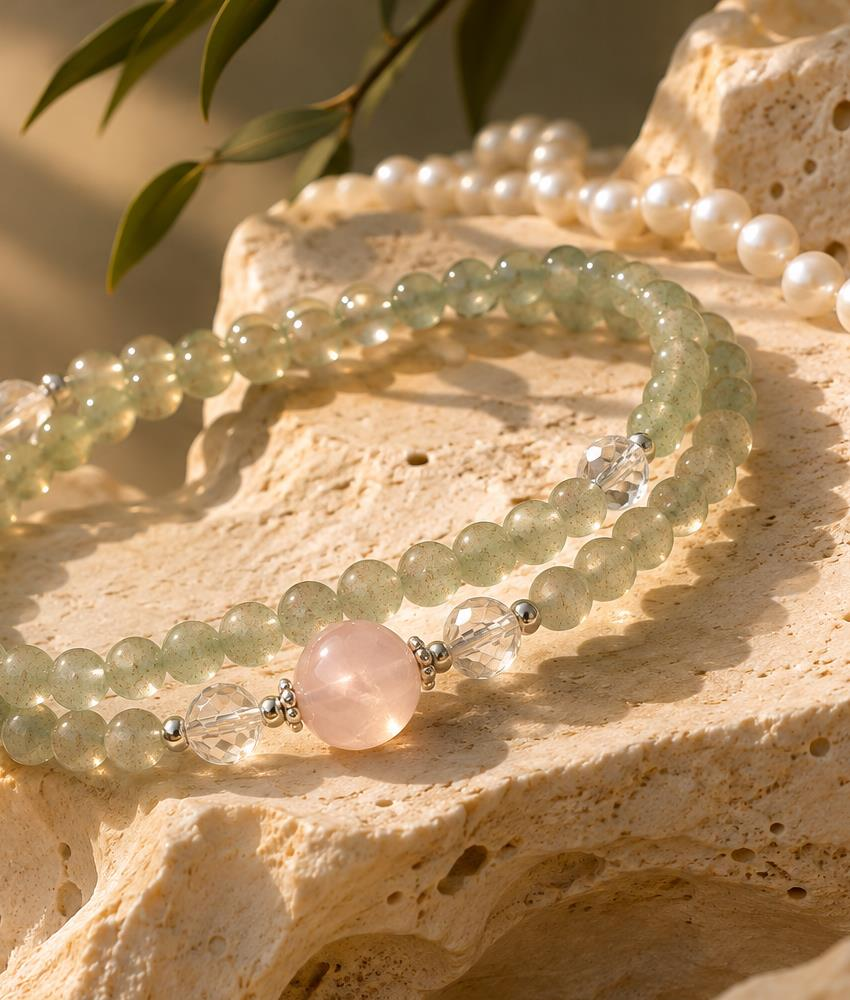

大地深处的光
水晶的清透与纹理，保留着矿物生长的痕迹。我们欣赏它的层次、色泽与不尽相同的细节。

OUR STORY
以自然为起点，把东方之美，留给真实的日常。
01 / THE NAME
森晖，取「森林」与「日光」之意。森林向下扎根，日光向上生长。我们以这个名字，表达对自然生命力的敬意，也提醒自己在纷繁之中，保有朴素而清晰的判断。
森，是根深叶茂、万木争荣。晖，是旭日东升、其光初照。向下扎根，向光而行，是森晖希望持续践行的品牌态度。

DONGHAI · OUR ORIGIN02 / OUR ORIGIN
森晖驻扎在江苏东海。在这里，可以看到水晶从原石到成品的过程，也更直接地感受到这个行业的真实与复杂。
我们不想做玄学贩卖者，也不想只做低价搬运工。我们希望站在源头与日常之间，认真地看料、选择、沟通，把值得佩戴的作品呈现给你。
从源头到腕间 ↗03 / OUR PHILOSOPHY
水晶的清透与纹理，保留着矿物生长的痕迹。我们欣赏它的层次、色泽与不尽相同的细节。
珍珠的温润与光晕，构成一种柔和的表达。与水晶相映，一硬一柔，一山一水。
OUR BELIEF
不赋予饰品改变命运的承诺，只愿它陪你感受当下的自在。
YOUR PERSONAL SELECTION
选一件与自己相契的作品，
也为在意的人，留一份温润的心意。